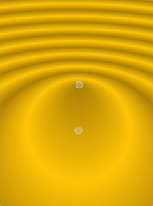

QGradient¶
Inherited by: QLinearGradient, QRadialGradient, QConicalGradient
Synopsis¶
Functions¶
- def
__eq__(gradient) - def
__ne__(other) - def
coordinateMode() - def
interpolationMode() - def
setColorAt(pos, color) - def
setCoordinateMode(mode) - def
setInterpolationMode(mode) - def
setSpread(spread) - def
setStops(stops) - def
spread() - def
stops() - def
type()
Detailed Description¶
The
PySide2.QtGui.QGradientclass is used in combination withPySide2.QtGui.QBrushto specify gradient fills.Qt currently supports three types of gradient fills:
- Linear gradients interpolate colors between start and end points.
- Simple radial gradients interpolate colors between a focal point and end points on a circle surrounding it.
- Extended radial gradients interpolate colors between a center and a focal circle.
- Conical gradients interpolate colors around a center point.
A gradient’s type can be retrieved using the
PySide2.QtGui.QGradient.type()function. Each of the types is represented by a subclass ofPySide2.QtGui.QGradient:
PySide2.QtGui.QLinearGradientPySide2.QtGui.QRadialGradientPySide2.QtGui.QConicalGradientThe colors in a gradient are defined using stop points of the
QGradientStoptype; i.e., a position and a color. Use thePySide2.QtGui.QGradient.setColorAt()function to define a single stop point. Alternatively, use thePySide2.QtGui.QGradient.setStops()function to define several stop points in one go. Note that the latter function replaces the current set of stop points.It is the gradient’s complete set of stop points (accessible through the
PySide2.QtGui.QGradient.stops()function) that describes how the gradient area should be filled. If no stop points have been specified, a gradient of black at 0 to white at 1 is used.A diagonal linear gradient from black at (100, 100) to white at (200, 200) could be specified like this:
linearGrad = QLinearGradient(QPointF(100, 100), QPointF(200, 200)) linearGrad.setColorAt(0, Qt.black) linearGrad.setColorAt(1, Qt.white)A gradient can have an arbitrary number of stop points. The following would create a radial gradient starting with red in the center, blue and then green on the edges:
radialGrad = QRadialGradient(QPointF(100, 100), 100) radialGrad.setColorAt(0, Qt.red) radialGrad.setColorAt(0.5, Qt.blue) radialGrad.setColorAt(1, Qt.green)It is possible to repeat or reflect the gradient outside its area by specifiying the
spread methodusing thePySide2.QtGui.QGradient.setSpread()function. The default is to pad the outside area with the color at the closest stop point. The currently setspread methodcan be retrieved using thePySide2.QtGui.QGradient.spread()function. TheQGradient.Spreadenum defines three different methods:
 PadSpreadRepeatSpreadReflectSpreadNote that the
PySide2.QtGui.QGradient.setSpread()function only has effect for linear and radial gradients. The reason is that the conical gradient is closed by definition, i.e. the conical gradient fills the entire circle from 0 - 360 degrees, while the boundary of a radial or a linear gradient can be specified through its radius or final stop points, respectively.The gradient coordinates can be specified in logical coordinates, relative to device coordinates, or relative to object bounding box coordinates. The
coordinate modecan be set using thePySide2.QtGui.QGradient.setCoordinateMode()function. The default isLogicalMode, where the gradient coordinates are specified in the same way as the object coordinates. To retrieve the currently setcoordinate modeusePySide2.QtGui.QGradient.coordinateMode().


-
class
PySide2.QtGui.QGradient¶ -
class
PySide2.QtGui.QGradient(QGradient) Parameters: QGradient – PySide2.QtGui.QGradient
-
PySide2.QtGui.QGradient.Type¶ Specifies the type of gradient.
Constant Description QGradient.LinearGradient Interpolates colors between start and end points ( PySide2.QtGui.QLinearGradient).QGradient.RadialGradient Interpolate colors between a focal point and end points on a circle surrounding it ( PySide2.QtGui.QRadialGradient).QGradient.ConicalGradient Interpolate colors around a center point ( PySide2.QtGui.QConicalGradient).QGradient.NoGradient No gradient is used. See also
-
PySide2.QtGui.QGradient.Spread¶ Specifies how the area outside the gradient area should be filled.
Constant Description QGradient.PadSpread The area is filled with the closest stop color. This is the default. QGradient.RepeatSpread The gradient is repeated outside the gradient area. QGradient.ReflectSpread The gradient is reflected outside the gradient area.
-
PySide2.QtGui.QGradient.CoordinateMode¶ This enum specifies how gradient coordinates map to the paint device on which the gradient is used.
Constant Description QGradient.LogicalMode This is the default mode. The gradient coordinates are specified logical space just like the object coordinates. QGradient.StretchToDeviceMode In this mode the gradient coordinates are relative to the bounding rectangle of the paint device, with (0,0) in the top left corner, and (1,1) in the bottom right corner of the paint device. QGradient.ObjectBoundingMode In this mode the gradient coordinates are relative to the bounding rectangle of the object being drawn, with (0,0) in the top left corner, and (1,1) in the bottom right corner of the object’s bounding rectangle.
-
PySide2.QtGui.QGradient.InterpolationMode¶ Constant Description QGradient.ComponentInterpolation The color components and the alpha component are independently linearly interpolated. QGradient.ColorInterpolation The colors are linearly interpolated in premultiplied color space.
-
PySide2.QtGui.QGradient.coordinateMode()¶ Return type: PySide2.QtGui.QGradient.CoordinateModeReturns the coordinate mode of this gradient. The default mode is
LogicalMode.
-
PySide2.QtGui.QGradient.interpolationMode()¶ Return type: PySide2.QtGui.QGradient.InterpolationModeReturns the interpolation mode of this gradient. The default mode is .
-
PySide2.QtGui.QGradient.__ne__(other)¶ Parameters: other – PySide2.QtGui.QGradientReturn type: PySide2.QtCore.boolReturns
trueif the gradient is the same as the othergradientspecified; otherwise returnsfalse.See also
PySide2.QtGui.QGradient.operator==()
-
PySide2.QtGui.QGradient.__eq__(gradient)¶ Parameters: gradient – PySide2.QtGui.QGradientReturn type: PySide2.QtCore.boolReturns
trueif the gradient is the same as the othergradientspecified; otherwise returnsfalse.See also
PySide2.QtGui.QGradient.operator!=()
-
PySide2.QtGui.QGradient.setColorAt(pos, color)¶ Parameters: - pos –
PySide2.QtCore.qreal - color –
PySide2.QtGui.QColor
Creates a stop point at the given
positionwith the givencolor. The givenpositionmust be in the range 0 to 1.- pos –
-
PySide2.QtGui.QGradient.setCoordinateMode(mode)¶ Parameters: mode – PySide2.QtGui.QGradient.CoordinateModeSets the coordinate mode of this gradient to
mode. The default mode isLogicalMode.
-
PySide2.QtGui.QGradient.setInterpolationMode(mode)¶ Parameters: mode – PySide2.QtGui.QGradient.InterpolationModeSets the interpolation mode of this gradient to
mode. The default mode is .
-
PySide2.QtGui.QGradient.setSpread(spread)¶ Parameters: spread – PySide2.QtGui.QGradient.SpreadSpecifies the spread
methodthat should be used for this gradient.Note that this function only has effect for linear and radial gradients.
See also
-
PySide2.QtGui.QGradient.setStops(stops)¶ Parameters: stops – Replaces the current set of stop points with the given
stopPoints. The positions of the points must be in the range 0 to 1, and must be sorted with the lowest point first.
-
PySide2.QtGui.QGradient.spread()¶ Return type: PySide2.QtGui.QGradient.SpreadReturns the spread method use by this gradient. The default is
PadSpread.See also
-
PySide2.QtGui.QGradient.stops()¶ Return type: Returns the stop points for this gradient.
If no stop points have been specified, a gradient of black at 0 to white at 1 is used.
-
PySide2.QtGui.QGradient.type()¶ Return type: PySide2.QtGui.QGradient.TypeReturns the type of gradient.
© 2018 The Qt Company Ltd. Documentation contributions included herein are the copyrights of their respective owners. The documentation provided herein is licensed under the terms of the GNU Free Documentation License version 1.3 as published by the Free Software Foundation. Qt and respective logos are trademarks of The Qt Company Ltd. in Finland and/or other countries worldwide. All other trademarks are property of their respective owners.